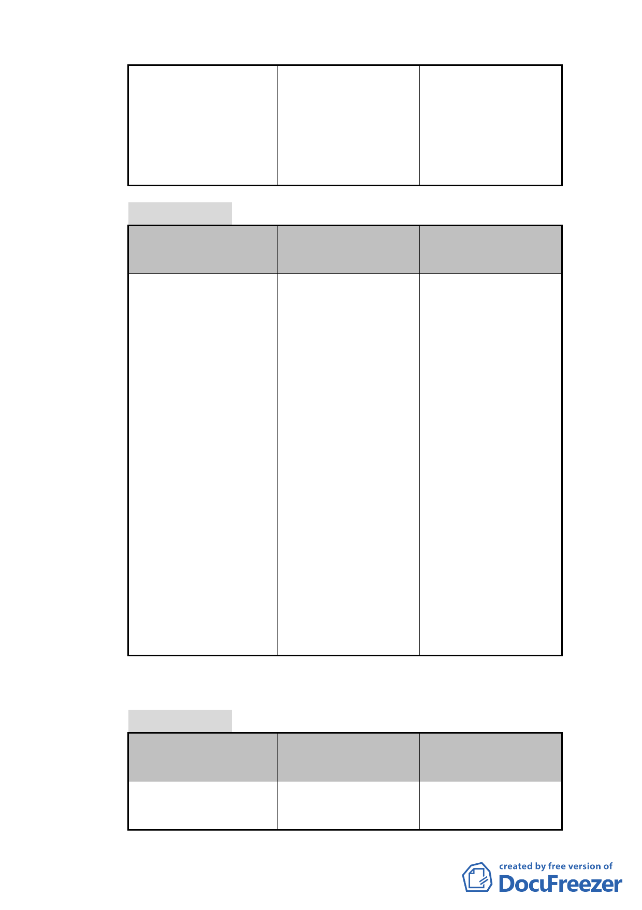

許使用項目外，並 許使用項目外，並允 2.本項係依專案小
允許第 44 組宗祠及 許第 44 組宗祠及宗 組審查意見修正。
宗教建築使用。 教建築使用。
2.住三之一變更為住
三之一（特）
（四）都市設計準則
公展計畫
本次修正計畫
說明
1.退縮建築之內容， 1. 本 案 凡 臨 接 之 計 本項係依專案小組
不符合市府對於更 畫道路未達 8 公尺 審查意見修正。
新單元面臨之計畫 者，請依市府更新
道路未達公尺者， 主管機關通案處理
均應退縮補足至 8 原則，基地先退縮
公尺，並順平處理 補足寬度至 8 公
之通案性規定。
尺，並順平處理，
2.明列植栽尺寸及建 以符防救災需要。
築 設 計 （ 外 觀 顏 2. 都 市 設 計 準 則 以
色、面材、附屬設 公共開放空間範疇
施）等準則。
為主，刪除植栽尺
寸及建築設計（外
觀顏色、面材、附
屬設施）等非屬公
共空間之文字內
容。
（五）更新地區劃定
公展計畫
本次修正計畫
說明
計畫區全區劃定為更 1. 劃 定 計 畫 區 內 永 本項係依專案小組
新 地 區 ， 面 積 昌段四小段 113、 審查意見修正。
- 20 -